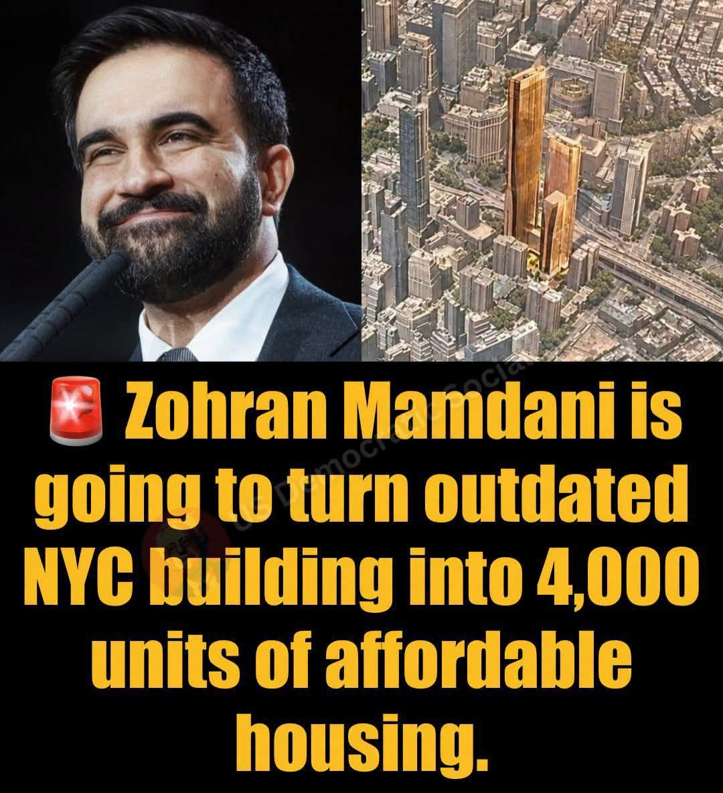

ARTICLE #006 · November 2026 · Willis Butts
America’s Buildings Are Already Here. Let’s Turn Them Into Homes.
Transforming vacant offices, hotels, shopping centers, and commercial buildings into affordable housing across America.

Concept illustration; the specific 4,000-unit claim shown in the supplied image has not been independently verified.
The Solution May Already Be Standing
Everywhere we look in America, we see buildings: office towers, empty shopping malls, closed hotels, abandoned schools, vacant department stores, and commercial properties sitting partially occupied or completely unused.
At the same time, millions of Americans struggle to afford a place to live. Young families cannot afford their first homes. Seniors on fixed incomes struggle with rising rents. Working people spend enormous portions of their incomes keeping a roof over their heads. Hundreds of thousands of Americans experience homelessness on any given night.
How can a country have so much existing infrastructure and still have such a severe housing shortage?
The answer is that we have not organized our existing resources effectively enough. As technology and economic conditions change, some buildings become obsolete for their original purposes. But obsolete does not necessarily mean useless.
A building no longer needed for offices may still be valuable as housing. A closed hotel may already contain much of the infrastructure needed for apartments. An abandoned shopping center may become an entire residential community. Instead of allowing these resources to deteriorate, we should develop a national strategy to put them back to work.
A New Approach to America’s Housing Crisis
Consider proposals to convert outdated New York City buildings into thousands of affordable apartments. Whether any particular project ultimately produces 4,000 homes depends on engineering, financing, approvals, and construction feasibility. But the underlying concept deserves national attention.
Why stop at New York City? Imagine identifying every suitable underutilized commercial building in the United States and evaluating its potential for residential conversion.
Some buildings could provide dozens of apartments. Others could provide hundreds. Large redevelopment sites might accommodate entire mixed-use neighborhoods.
Turn existing, underutilized infrastructure into affordable places for Americans to live. This would not eliminate the need for new construction, but it could become an important additional source of housing supply.
The Economics of Reuse
When we construct a new building, we must pay for land, site preparation, foundations, structural systems, exterior walls, roofing, utilities, and interior construction. With an existing building, some of those investments have already been made.
The foundation may be sound. The structure may have decades of useful life remaining. Electrical service, water connections, sewer systems, roads, and parking may already exist.
However, not every building can be converted economically. Office towers with deep floor plates may lack adequate natural light for apartments. Plumbing, ventilation, fire protection, accessibility, and building codes can require extensive modifications. Some properties may cost more to convert than to replace.
Each property should undergo a systematic feasibility analysis comparing conversion costs, new construction costs, long-term operating expenses, and the number of homes that can realistically be created.
The goal is not simply to reuse buildings. The goal is to create the greatest amount of safe, affordable housing from the resources already available.
A National Building Conversion Initiative
I propose that the United States establish a coordinated National Building Conversion Initiative through partnerships among federal, state, and local governments, private property owners, nonprofit housing organizations, developers, architects, engineers, and community institutions.
Its work would begin with a national inventory of potentially convertible properties. Artificial intelligence and geographic information systems could help identify candidates using commercial vacancy information, property records, building characteristics, transportation access, infrastructure capacity, and neighborhood housing needs.
Each candidate would then be evaluated by qualified professionals. Federal programs could offer low-interest financing, targeted grants, tax incentives, or loan guarantees for projects meeting affordability and public-benefit requirements.
Cities could modernize zoning regulations to permit appropriate residential conversions while maintaining safety standards. Property owners would have opportunities to sell, lease, or redevelop buildings voluntarily.
We do not have to confiscate property or punish those who own it. We can create economic incentives that make unused buildings valuable again.
From Empty Buildings to Thriving Communities
Housing conversion should be about more than dividing buildings into apartments.
Imagine a vacant shopping mall transformed into a residential community with apartments, grocery facilities, medical offices, childcare, recreation, gardens, and gathering spaces. Imagine an outdated hotel converted into permanent supportive housing, with services available for residents who need assistance.
Imagine an abandoned school becoming affordable apartments for seniors, with classrooms repurposed for lifelong learning and community activities.
These projects could incorporate the Community Haven concept already proposed by Terra Nova Development. Residents could have convenient access to shared food distribution, donated household goods, community kitchens, recreational facilities, and educational resources. This would reduce more than housing expenses; it could reduce the cost of everyday living.
Bringing Housing Costs Down
Housing prices are influenced by supply, demand, financing costs, land values, construction expenses, regulations, and local economic conditions. Increasing the supply of suitable homes can help relieve upward pressure on rents and prices, particularly in markets where housing is scarce.
But simply converting buildings does not guarantee affordability. Publicly supported conversions should therefore include enforceable affordability requirements, with rents tied to realistic household incomes and protections designed to preserve affordability over time.
Projects should be distributed thoughtfully across communities, with access to employment, transportation, schools, and essential services.
The long-term ambition should be to make housing more abundant and affordable in every American city—not by destroying property values or penalizing homeowners, but by expanding the choices available to people.
The Environmental Opportunity
Reusing existing buildings can reduce construction waste and preserve materials already embodied in structures. Demolishing a large building and replacing it consumes energy, generates waste, and requires new construction materials.
Properly designed conversions can improve energy efficiency through insulation, modern heating and cooling systems, efficient windows, and renewable-energy installations. Environmental benefits must be evaluated project by project, but the opportunity is substantial.
We should not discard valuable infrastructure merely because its original commercial purpose has changed.
An Opportunity for American Workers
A nationwide conversion initiative could create substantial demand for carpenters, electricians, plumbers, HVAC technicians, structural engineers, architects, construction managers, and many other professionals.
Workforce development programs could train new workers while providing opportunities for experienced tradespeople. American manufacturers could supply building materials, appliances, insulation, windows, and energy systems.
The initiative could encourage innovative construction technologies, including prefabricated interior components and sustainable materials. Instead of allowing vacant buildings to become economic liabilities, we could turn them into productive assets supporting employment and community development.
Start with Pilot Cities
A practical national strategy should begin with carefully selected pilot projects. Choose communities with significant housing shortages and identifiable inventories of vacant commercial properties.
Evaluate buildings systematically. Select projects with favorable economics, suitable locations, and strong local partnerships.
Measure construction costs, conversion timelines, energy performance, affordability, resident satisfaction, and long-term financial sustainability. Publish the results.
Successful approaches could be replicated nationally, while unsuccessful approaches would provide lessons for improving future projects. This is how systems engineering works: identify resources, define objectives, measure constraints, design solutions, test them, and improve the system.
The Terra Nova Philosophy: Abundance Is Already Here
We live in a country filled with extraordinary wealth, infrastructure, technology, and productive capacity. Yet millions of people cannot access the basic necessities of life.
Our challenge is not always a complete absence of resources. Frequently, it is a failure to organize those resources so that they can serve human needs effectively.
An empty office building and a family without a home represent two problems that may help solve each other. A vacant hotel and a community experiencing homelessness represent an opportunity for creative redevelopment. A struggling shopping mall and a neighborhood lacking affordable housing may become the foundation of an entirely new community.
Instead of seeing abandoned buildings, see potential homes. Instead of seeing obsolete commercial properties, see community assets. Instead of seeing only the cost of housing, see the resources we already possess that could help reduce that cost.
America does not need to start from nothing. We need to make better use of what generations of Americans have already built.
We can preserve private ownership, encourage investment, create jobs, protect the environment, and expand affordable housing simultaneously. That is the kind of coordinated national development Terra Nova Development, Inc. exists to explore.
There is no them. There is only us. We are one.